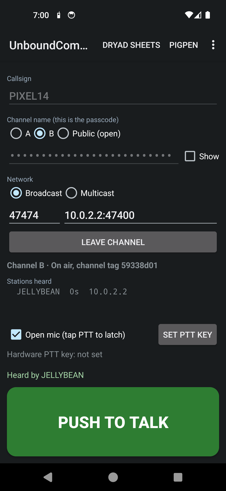
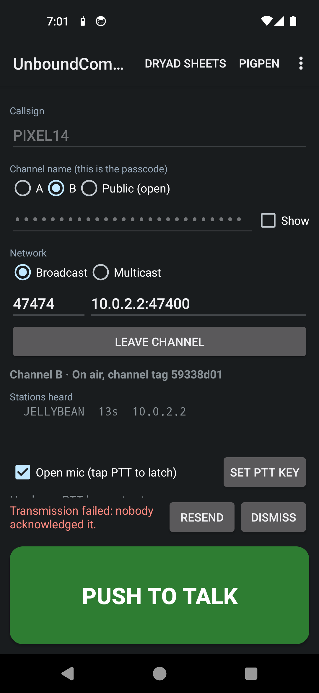
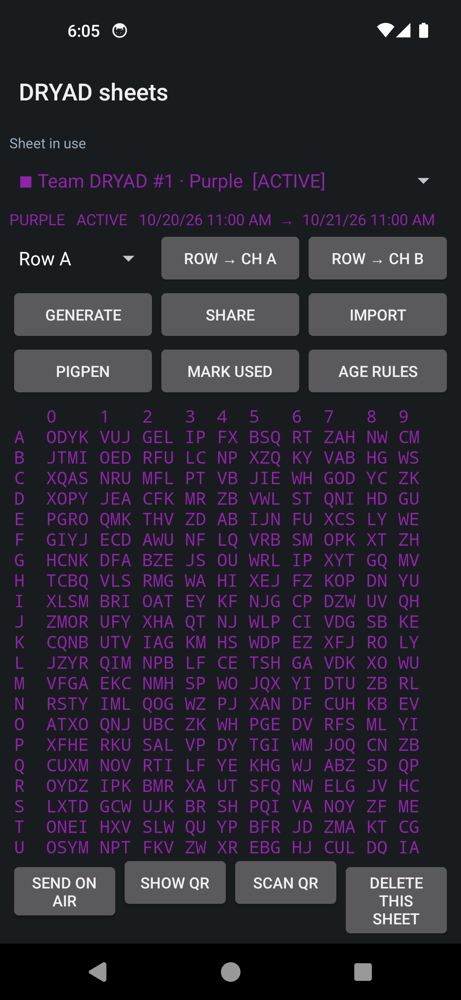
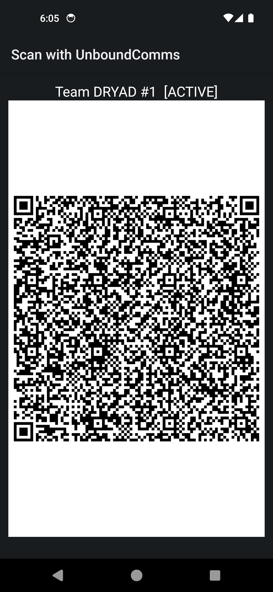
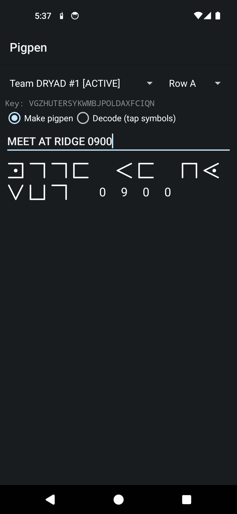
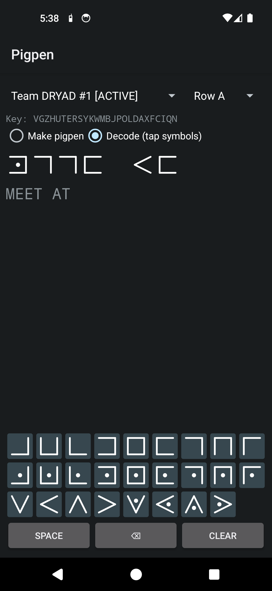
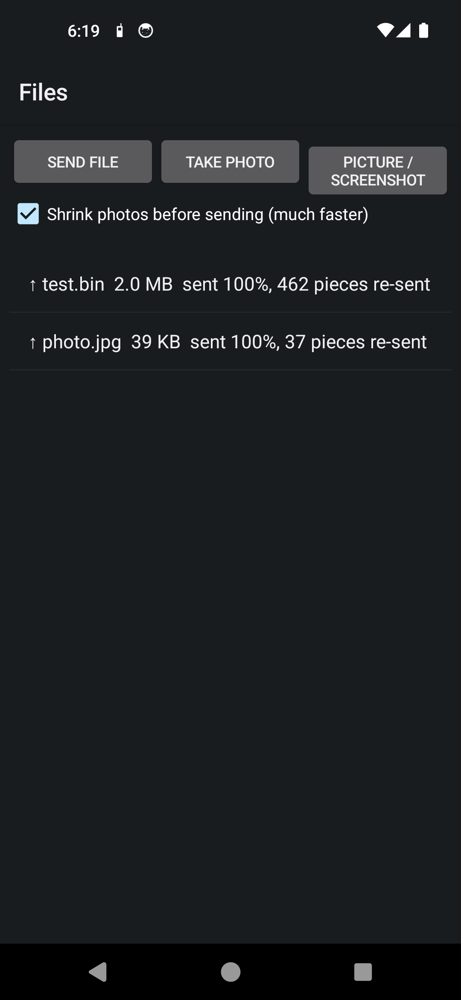
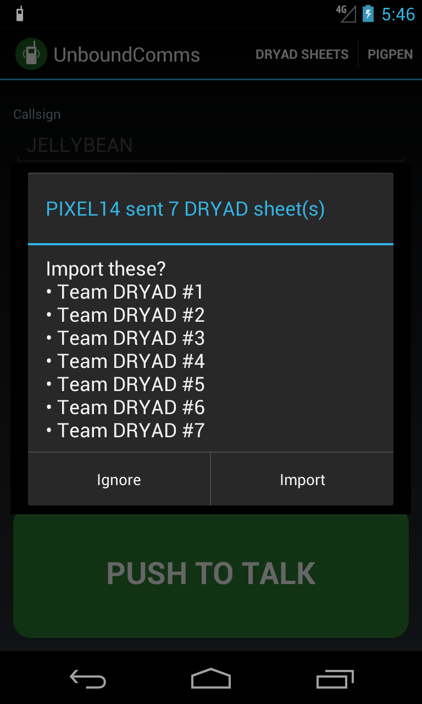

Radio over any WiFi. No towers, no internet, no accounts.
Your Community Communications turns Android phones into encrypted push-to-talk radios on an OpenManet mesh or any WiFi network. Everyone on a channel hears everyone, and the channel name is the key.
Get the app How it was builtWhat it does
Voice first, with field tools around it. Sideloaded, no accounts, fully offline, and runs on Android 4.1 (2012) through Android 14.
Radio
Push-to-talk, full duplex
Hold the button, latch open mic, or teach it any hardware key (USB PTT, headset button, keyboard). You keep hearing others while you talk, and overlapping voices are mixed. Echo cancelling lets duplex work on the loudspeaker.
Channel name is the passcode
No sign-up. Everyone who types the same channel name shares the same AES-256 key. Channels A and B, six extra channels C–H, an open Public channel, and an experimental OpenMANET* slot.
Listen to many, talk on one
Talk on one channel and also listen to as many others as you like (including Public). The Channels page has Talk here, Listen, a note per channel, swap with A or B, and an eye for which four channels get a button on the home screen. Listen-only channels still confirm what they heard.
Contacts and status
Everyone heard, with status (green available, yellow away, red stealth), battery, last seen, distance and bearing, and your own notes. Away saves voice to Chat for playback; stealth (or turning the volume all the way down) silences everything and buzzes instead.
Commander view on tablets
Turn a tablet sideways for a command post: the map in the middle, channel buttons and PTT on the right, and a side panel that switches between Contacts and Channels with one tap. Hide the panel or the title bar for a bigger map; Contacts can show one line per person. Contacts are grouped into teams (one per channel) with Message and Call on each person and team, Broadcast talks to several teams at once, and a long list of map-point buttons suits the group (friends, security, firefighting or military).
Simple modes and a wall intercom
Pick how you'll use it when you first open it. Scouts, Staff, 4WDing, Friends convoy and Caravan/camping need only a private key and have one-tap buttons for the job (first aid station, long break, flat tyre, need fuel, meal in 15 minutes…), with share-location-until-stopped, drop-out alerts and crash detection* for 4WD. Intercom turns a wall-mounted phone or tablet into an old-style house intercom: big room buttons, talk to one room or everyone, hands-free, call history, a gate camera and auto blackout.
Reach the group over the internet
Tunnel comms lets a phone away from the group's WiFi join in through a relay (best the commander tablet) with a forwarded port and a DRYAD-row key for each remote person. UDP with TCP fallback, and everything stays end-to-end encrypted.
Know you were heard
Listeners confirm each transmission and you see "Heard by …". If nobody does within 5 seconds you hear a tone and "transmission failed", with Retry now or Retry in… 5 min, 15 min, 1 hour or at a set time, 1 to 99 tries. Retrying stops as soon as anyone hears it.
Any network
UDP broadcast or multicast. Advanced… picks WiFi, VPN, USB tethering, USB Ethernet or any other interface. "Extra peers" and a tiny PC relay join separate subnets.
Data
Files, photos, screenshots
Send to everyone on the channel, or use Share → Send on Your Community Communications from any app. Built for lossy WiFi: missing pieces are re-requested and repaired, and every file is checked before it's saved.
Location and offline map
Send your GPS position (it works even if a phone's clock is wrong). The map uses offline tile folders, such as ATAK imagery downloads, with online tiles off by default. It shows everyone's last position, plus a compass list with direction, distance and time since check-in.
Shared points of interest
Long-press the map to drop a POI with a note, an icon (people, vehicles, aircraft, drone, squares) and an expiry. Anyone can update, move or remove it and resend. Sync POIs swaps everyone's points, and any point opens in Google Maps for directions.
Full-screen compass
Tap the map's compass for a Silva-style baseplate compass: turn the bezel to set a bearing, follow "turn left/right", get the bearing to the map's X, switch true or magnetic north, and see map points around the edge or as a list with a red arrow to the one you pick.
Codes
Modern DRYAD sheets
26 rows of 28 shuffled symbols: A–Z plus two special symbols you choose for space and new line. Secure random batches with validity windows, names and colours. Share by text, QR or over the air, and they auto-delete when used or expired.
Pigpen from a DRYAD row
Turn a message into keyed pigpen, or tap symbols on a pad laid out like the real figures to decode. Space and new line have their own symbols. What DRYAD and pigpen are, and how to use them.
QR sharing
Share a channel or a whole batch of sheets phone to phone with the camera. Nothing touches the internet.
Group setup and LAN storage
One QR code sets up a phone
The second and every later phone scans a phone setup QR code in the first-start wizard: the LAN storage and its login, tunnel server, Public key, channel A, OpenMANET and home WiFi, then the group's own default settings and DRYAD sheets. Any set-up phone can show the code, or print it from the server.
Your own LAN storage
A tiny Docker file server, ready for Project NOMAD or a Raspberry Pi, keeps one shared offline map cache, app updates (phones update themselves), logs, missions and config backups. Its web admin page tidies old files, sets the group's defaults, publishes updates and syncs to other stores on a schedule with a bandwidth limit.
Maps, ATAK and more
Shared map tiles, MGRS, map-point shapes, aircraft (ADS-B) and ships (AIS) shared to the channel, ATAK map import/export and an ATAK compatible switch, fake GPS for training, burst voice, live camera pictures and a TV mode.
Protection and light discipline
PIN lock
A PIN guards the DRYAD and pigpen screens, showing channel names or their QR codes, and joining a new channel. It stays unlocked for 5 minutes.
Secret wipe
Three quick taps on your callsign erase every sheet, POI and setting.
Red light and Blackout
Red light mode turns every screen red at low brightness. Blackout makes the screen black at minimum backlight while the radio and hardware PTT keep working. Double-tap to wake.
Screens
Taken from the Android 14 and Android 4.1 test emulators, before the map, Modern DRYAD and protection features were added.








How it works
Plain UDP on port 47474, broadcast or multicast, so it runs on meshes and ordinary access points alike.
| Part | Design |
|---|---|
| Keys | PBKDF2-SHA256 (20,000 rounds) of the channel name gives an AES-256 key and an HMAC key. Packets are AES-CTR and then HMAC-SHA256. |
| Audio | 8 kHz, IMA ADPCM, 40 ms frames, about 40 kbit/s per talker. Each packet decodes on its own, so a lost packet is a 40 ms gap and never corrupts what follows. |
| Mixing | A small jitter buffer per talker, all talkers summed in real time. Echo cancelling is on, so you can use duplex on the loudspeaker. |
| Acknowledgements | Listeners send an ACK when a transmission ends, or 1 s after it stops arriving. The sender waits 5 s. |
| Files | Paced 1,150-byte chunks, with gaps requested and only those re-sent, once for everyone who missed them. Checked with SHA-256 before saving. A 2 MB file survived 20% packet loss byte-for-byte in testing. |
| Location | Latitude, longitude, accuracy and the fix's age rather than a clock time, so phones with wrong clocks still show correct times since check-in. Positions are kept for 24 hours. |
| POIs | Each point carries a version number. When two edits meet, the higher version wins. Points are kept on the phone across restarts. |
| Public channel | Uses a fixed, published key. Anyone with the app can listen, so it is open, not private. |
| OpenMANET* slot | Experimental. Opus voice (48 kHz, 20 ms, 32 kbit/s) in RTP on an OpenMANET talk group's multicast address. Unencrypted, half duplex, no acknowledgements. |
| PIN | Stored as a salted PBKDF2 hash. The secret wipe removes it too. |
Your Community Communications on OpenManet
OpenManet is the network Your Community Communications was designed for. This is how the two are planned to fit together.
OpenManet is an open-source mesh radio built from a Raspberry Pi, a Wi-Fi HaLow (802.11ah) HAT and OpenWrt. HaLow runs below 1 GHz, so it reaches much further than normal WiFi, and the nodes route for each other (802.11s with batman-adv), so the network grows as you add radios. There are no towers and no internet involved.
1. Phones join a node
Each OpenManet node also runs an ordinary 2.4 or 5 GHz access point (or an Ethernet port). Your phone joins its nearest node's WiFi and gets an address from that node, on the mesh's shared subnet (10.41.0.0/16 by default).
2. The mesh is one big LAN
Each node bridges its access point, Ethernet and mesh link together. To the phones, every node is on the same network, so a broadcast or multicast packet sent near one node is carried hop by hop to all the others.
3. Your Community Communications rides on top
The app sends encrypted UDP voice on port 47474, either as a subnet broadcast or to the multicast group 239.47.47.47. It needs no server, no IP setup and no list of who is out there. Anyone on the mesh with the same channel name hears you.
4. Optional PC relay
Where broadcast can't reach (a second mesh, a different subnet, a laptop at the mesh gate, or a link over another network), run the small relay on a PC and put its address:47400 in each phone's "Extra peers". It forwards packets without decrypting them.
Talking to OpenManet's own Comms (experimental)
OpenMANET* channel
A separate slot joins an OpenManet "Comms" talk group: Opus voice in RTP over multicast, which OpenManet says works with ATAK's Vx plugin. It is unencrypted, half duplex and has no acknowledgements. Use channels A and B for private, duplex calls.
Node page in the browser
One tap opens the node's own Comms page (port 8081) or its management page (port 8080).
Choose the network
If a phone has more than one connection (WiFi plus VPN, or a USB Ethernet link to a node), Advanced… lets you pick which one the radio uses.
| Setting | Suggestion on OpenManet |
|---|---|
| Send mode | Try multicast first. OpenManet enables batman-adv multicast handling for apps like TAK, which can be gentler on the mesh than broadcast. If some phones can't hear, switch everyone to broadcast. |
| Bandwidth | HaLow gives roughly 1 to 15 Mbit/s depending on region and range. Each talker uses about 40 kbit/s, so several people at once is fine, but every hop repeats the traffic. Keep file and photo sharing small on long chains. |
| Relay | java UdpRelay.java 47400 on any PC with Java (the file is in the app source, under relay/). Every phone that should use it adds the PC's IP and port 47400 under Extra peers. |
| Channels | Agree channel names (or a DRYAD row) before going out. Use the Public channel only for open calls, because anyone with the app can hear it. |
OpenManet links: openmanet.net · documentation · networking guide · hardware · firmware downloads · GitHub
Get it
Your Community Communications is sideloaded. It is not in any app store.
1. Download the APK
your-community-communications.apk (Android 4.1 and newer).
2. Allow the install
Open the file and allow "install unknown apps" for your browser or file manager when asked.
3. Pick a channel
Join the same WiFi or mesh, type the same channel name as your group (or scan your group's phone setup QR code), and tap Channels, then Talk here. With USB debugging on, an AI assistant can install it and set every permission for you.
Read more
Getting started guide (Word), user guide, every feature in one list, LAN storage server and desktop setup, protocol and the prompt to rebuild it. Apache License 2.0.